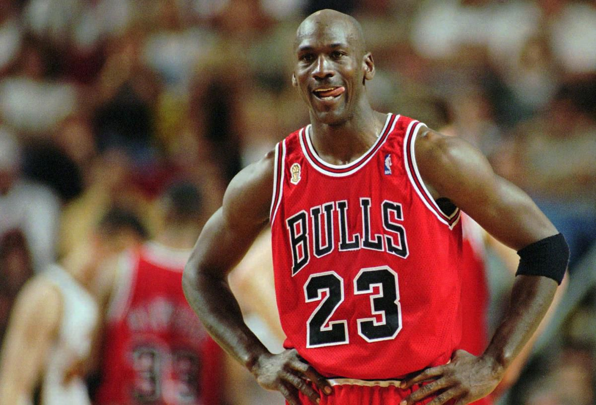

LeBron James is the best player in NBA history, Here is why. He is one of only two players to average at least 25 points, six rebounds, and six assists for his career, LeBron's numbers are actually 27.1, 7.3, and 7.0, the other being Oscar Robertson.He is one of five players with at least four NBA MVPs, alongside Wilt Chamberlain (four), Michael Jordan (five), Bill Russell (five), and Kareem Abdul-Jabbar (six), and he's not done yet. And, as you well know, he is the only player in modern NBA history to play in seven straight Finals.

Jordan will always be No. 1, for these reasons:
—His unblemished record in the NBA Finals: Six appearances, six titles. (Lest you forget, LeBron is 3-6.)
—For a transcendent skill set and charisma that turned Air Jordans into the most coveted sneakers in history and helped transform Nike into a corporate giant.
—For, upon buying majority interest in the Charlotte Hornets in 2010, becoming the first former NBA player to own an NBA team.
